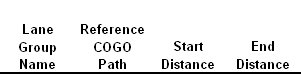

Lane Group Definition
Description
The definition of a group of lanes is used in conjunction with a definition of a group of trucks from Truck Group Definition to describe the full range of loading that is used to compute a live load envelope. In the Load Combination Definition both a Lane Group name and a Truck Group name are referenced. Refer to the Live Load Theory section of this manual to understand how these entries are used.
Parameters
Lane Group Name
Use a unique name for each lane group.
COGO Path
This is a reference to an existing COGO path that will define center line for the Lane group.
Start Distance
Distance from start of COGO path to start of Lane group. Use this value to define where on the referenced COGO path the lane group starts. It does not have to be at a bridge end. Loads positioned off the bridge are not processed.
End Distance
Distance from start of COGO path to end of Lane group. This value must be greater then the Start Distance. Use this value to define where on the referenced COGO path the lane group ends. It does not have to be at the bridge ends. Loads positioned off the bridge are not processed.
Offset to Left Edge
Specify the Live Load Placement:Left edge, looking up station, as an offset distance from the center COGO path.
Offset to Right Edge
Specify the Live Load Placement:Righteft edge, looking up station, as an offset distance from the center COGO path.
Max Number Lanes</span>
When the Lane Group Positioning Methods is CTR, LCR, or LCRQ then this value will limit the total number of lanes that are loaded on the bridge at one time. This value must get greater then zero and is limited to the number of lanes that will fit between the right and left edges.
Motion Mode</span>
Select one of the automatic load generation modes or NONE.
- CTR
Center of Lane Group
- LCR
Left, Center, and Right
- LCRQ
Left, Left Quarter, Center, Right Quarter, Right
- NONE
Use this mode when the Truck group only references trucks with static loads or sequenced movement.